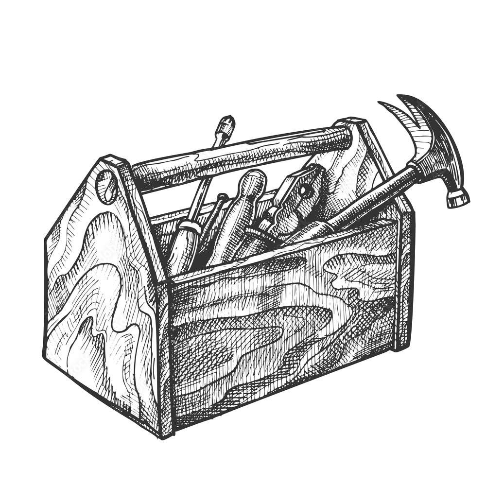

my personal toolbox of programs and configurations, feel free to rummage around.
Note: While this is meant to simply store useful scripts and such, since it is now available on-line, it may become a learning source as well, in that regard if you want to make tweaks to the scripts or add supplementary explanations feel free to write comments on the respective page or make a pull request to the source code